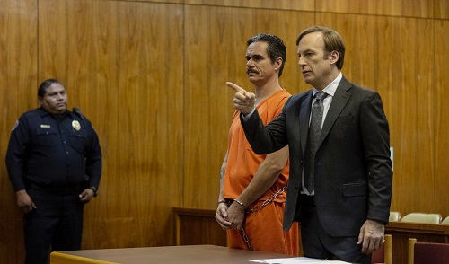

<body style="background-color:#FFF0C9;">
</body>

<p style="text-align:center"><span style="color:#000000; font-family:Calibri,sans-serif; font-size:11pt">I<span style="font-size:14px"><span style="font-family:Comic Sans MS,cursive">l embauche le meilleur avocat, Saul Goodman. Il gagne le jugement et il peut continuer sa vie criminelle.</span></span></span></p>

<p style="text-align:center"></p>

<p style="text-align:center"><strong><span style="font-size:48px"><span style="font-family:Georgia,serif"><a href="https://www.fbi.gov/investigate/organized-crime">RECOMPENSE!</a></span></span></strong></p>

<p style="text-align:center">&nbsp;</p>

<p>&nbsp;</p>

